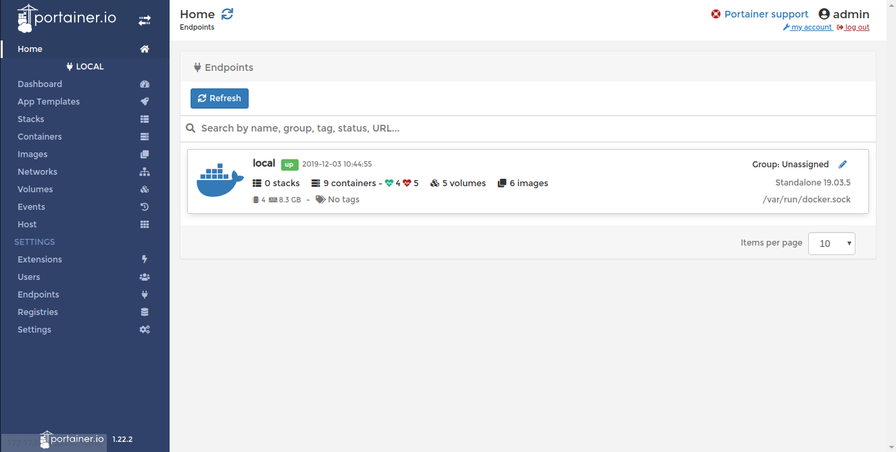
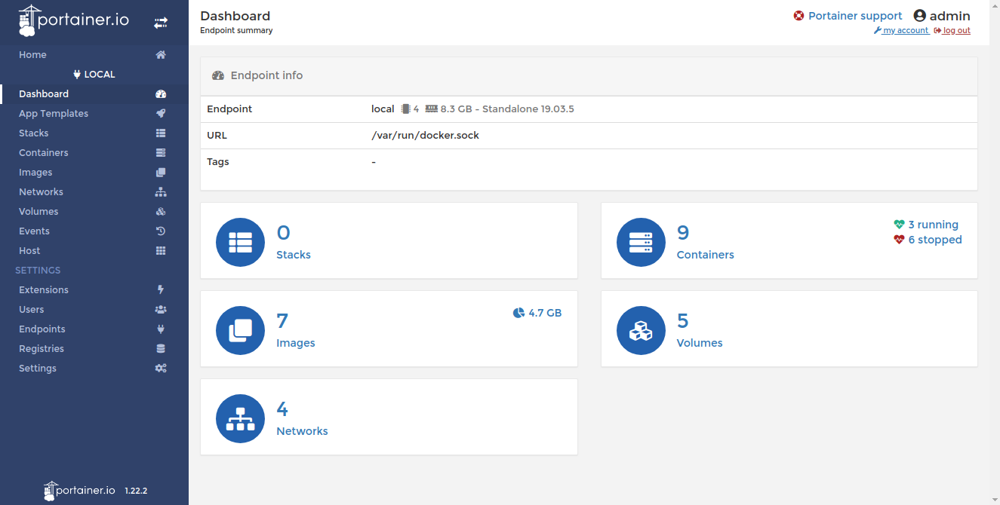
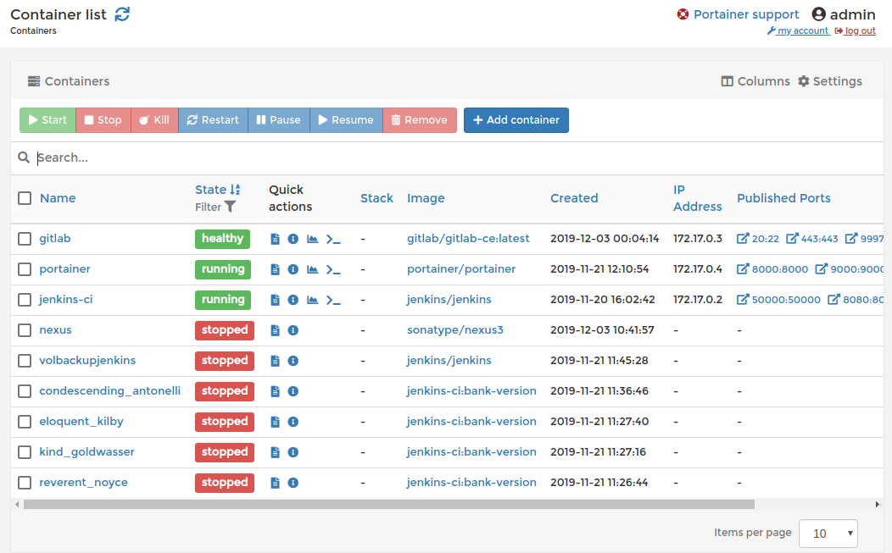
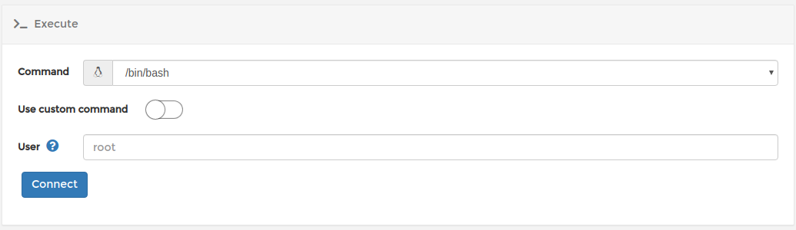
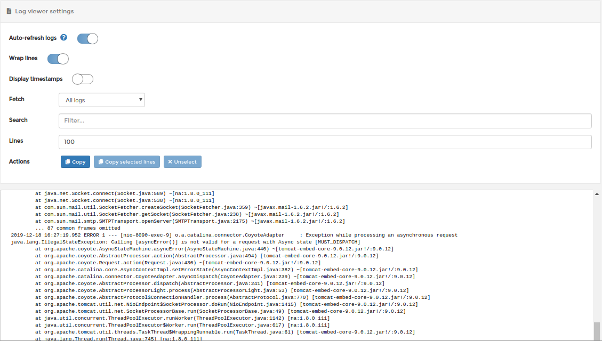
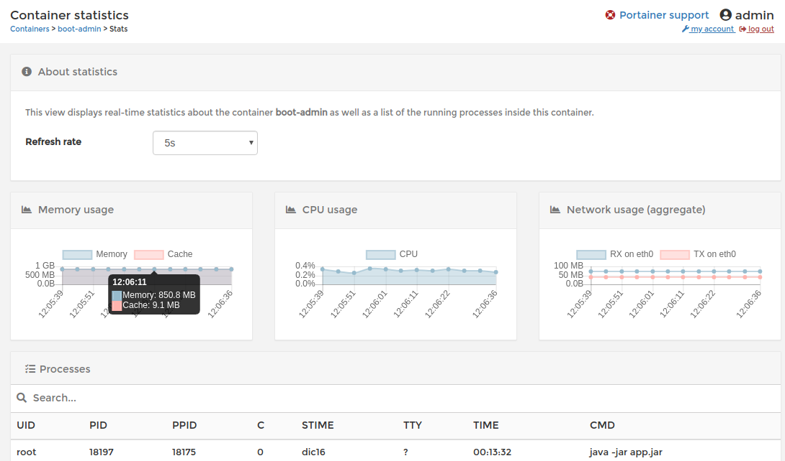

Administrador.
Portainer.io es un administrador para Docker que funciona para gestionar las imagenes obtenidas, ver los volumenes creados, realizar la mayor parte de comandos de manera gráfica, etc. La interfaz inicial sera como el ejemplo siguiente:
Comencemos...
Dashboard - Aqui veremos las secciones mas relevantes de esta herramienta.
Seleccionamos Containers en donde veremos los contenedores que estan en funcion.
Comand Line por imagen docker
Existe la posibilidad de entrar a los contenedores sin necesidad de usar el comando exec -it docker bash ya que portainer nos ofrece una seccion peculiar en donde al seleccionarla podemos ingresar por tipo de usuario o simplemente root para administrar en su interior el contenido.

Seleccionamos el icono >_ para acceder a la consola de nuestro docker. Primeramente nos enviara a una pantalla mas en la cual nosotros decidiremos con que tipo de usuario entrar
Aqui podemos indicar el usuario con el que queremos entrar pero en caso de no simplemente puedes acceder con un usuario por default o en su defecto simplemente escribiendo root de esta manera tendremos control absoluto.

Para salir simplemente dando clic en Disconnect
Logs
Otro de los puntos a favor es la capacidad de mostrar logs en una pantalla distinta, sencillamente dando un clic en el icono de la hoja.
Status Docker Images
Tambien es importante mencionar el monitoreo de las imagenes docker que tengamos en funcion, sean locales o remotas
